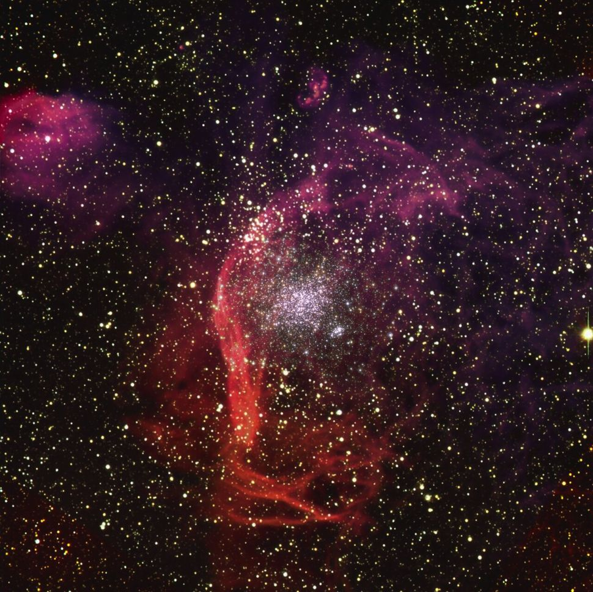

An artist's depiction of a black hole and star orbiting each other in star cluster NGC 1850. Credits: ESO/M. Kornmesser
Because black holes absorb all flavors of light, telescopes typically can't see them directly. But any black hole will leave fingerprints: for instance, its gravity will influence the movements of objects around it — and those objects, telescopes can study. Now, chasing one such clue, astronomers have found a black hole in a cluster just outside the Milky Way, making it the first black hole ever spotted beyond our own galaxy with this technique. The astronomers made the discovery using the European Southern Observatory's Very Large Telescope (VLT), which is perched atop a desert mountain in northern Chile. The researchers turned the VLT's eyes upon NGC 1850, a cluster nestled in the neighboring Large Magellanic Cloud about 160,000 light-years away from Earth. Here, scientists could look at thousands of stars in one go.
An artist's depiction of a black hole and star orbiting each other in star cluster NGC 1850.
Credits: ESO/M. Kornmesser
"Similar to Sherlock Holmes tracking down a criminal gang from their missteps, we are looking at every single star in this cluster with a magnifying glass in one hand, trying to find some evidence for the presence of black holes but without seeing them directly," Sara Saracino, an astrophysicist at Liverpool John Moores University in England, said in a statement. The researchers observed the stars' motions to find any signs of a ghostly black hole. The smoking gun, as it were, was a humble star about five times the sun's mass. The astronomers found subtle blips in that star's motions: the telltale sign of the black hole that star was orbiting. The culprit? A black hole with around 11 times the mass of the sun. Its home, a star cluster called NGC 1850, is only about 100 million years old, practically an infant by cosmic scales. No black hole, the astronomers say, has ever been discovered in a cluster that young.

A Hubble Space Telescope image of star cluster NGC 1850, which is located in the Large Magellanic Cloud.
Credits: ESO, NASA/ESA/M. Romaniello
The research will be published in the Monthly Notices of the Royal Astronomical Society. Now, the researchers think the same technique can help find other black holes in other dark corners of the universe, helping us understand how these strange objects age and develop. "The result shown here represents just one of the wanted criminals," said Saracino, "but when you have found one, you are well on your way to discovering many others, in different clusters."
Related PostsNASA Completes Mega-Moon
Rocket Stacking, Invites
Media to Learn More

NASA's Juno Spacecraft
'Hears' Jupiter's Moon